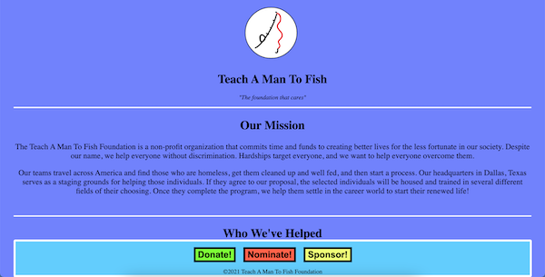
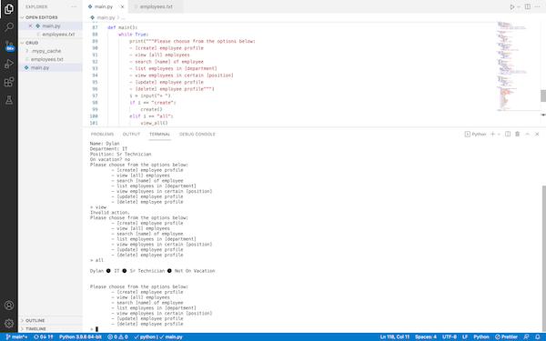
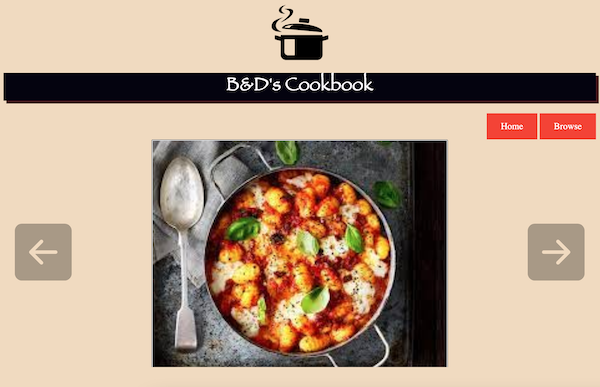
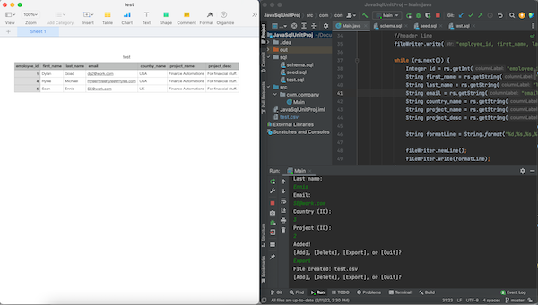

About Me

My name is Dylan Goad. I am from Charleston, Mississippi and I am attending Base Camp Coding Academy in Water Valley, Mississippi. I graduated from Grenada High School in May of 2021 with honors and I am a recipient of the Ed & Becky Meek Foundation Scholarship Program.
Here at Base Camp Coding Academy I am pursuing a career in software development. At BCCA, I learn technical and professional skills which I plan to apply in the workplace. Every day I enter Everest, the home of BCCA, ready to apply myself to my learning and any obstacle thrown my way.
Skills
At BCCA I have learned all of the essential skills to be a Full Stack Software Developer. Below is a list of all the specific languages and frameworks that I have been trained in using.
Alongside the BCCA curriculum I have pursued a Google Certificate of Data Analytics. In the certification I have learned the skills necessary to become a data analyst, as well as the skills that most data analyst jobs will entail.
Language & Frameworks
Python
Git
HTML/CSS
Django
JavaScript
Java
SQL
Spring
Bootstrap
R
🔽Projects🔽
GOAT Project

I constructed this webpage utilizing my skills in HTML and CSS to honor Neil DeGrasse Tyson as the Greatest Of All Time.
Skills Used: HTML, CSS
GitHub RepoCharity Website
I constructed this website based around a fictional charity of my choice.
Skills Used: HTML, CSS
GitHub RepoCRUD Project
I constructed this terminal based CRUD (Create, Read, Update, Delete) application I created using only Python. A simple program to get a feel with coding applications in Python.
Skills Used: Python
GitHub RepoB & D's Cookbook
A Unit Project for the JavaScript Unit done with my classmate Ben Crosby. We utilized strictly HTML, CSS and JavaScript to accomplish what we wanted in the website design.
Skills Used: HTML, CSS, JavaScript, VSCode
GitHub RepoQuickFile
My Java/SQL unit project. It is a program that takes SQL data and ports it to a .csv file through Java. The .csv file can then be used in spreadsheet applications. The CRUD-like program I used alongside the spreadsheet production code can insert data, delete data, and export the file by executing different methods.
Skills Used: Java, SQL, IntelliJ
GitHub RepoEmail Me!
- Personal Email: dylangoad0325@gmail.com